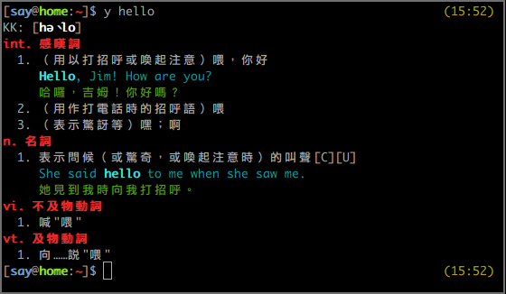

Android CTS - 讓 Report 說話
接著來談談當初在負責 CTS 時遇到的最大困難，以及最後解決的方法。
什麼是 CTS？
Android 雖然是 Open Source Project，即任何的廠商都可以自行生產手機，但 如果想在出廠時內建 Google Play 等 Google 所提供的 APP，就必須與 Google 簽合約，即每一款生產的手機都需要通過 CTS 測試。
CTS 測試包含上萬筆測項，能否順利通過將影響手機是否能正式出貨，因此對各系 統廠而言，這都會是一個相當重要的任務。通過 CTS 的方式，是由廠商自行執行 Google 提供的 CTS 程式，並產生一份通過所有測試的 Report，Google 審核無誤 後，這樣就算大功告成了。
然而，即使是同一款手機，每一次執行 CTS 都不見得能得到完全相同的結果。這 部份有可能是手機本身的軟、硬體不穩定，也有可能是來自於 CTS 的 bug。
困難點
由於每次執行 CTS 得到的結果都不同，而只要成功產生一次全部通過的 Report 就可以提交，那麼是不是可以準備很多台電腦、很多台手機，每天二十四小時的跑 ，只要任何一次 ALL PASS 就好？
是的，這樣確實沒有問題。於是公司安排了一部分的測試人力負責運行 CTS，早期 是一天產出一份，後來不知道怎麼搞的，變成兩組人馬在做，有時候一天會產生近 十份報表。
如果是問題已經被解決的差不多的階段，這樣做確實很合理；但如果有些測試尚未 被解決，百分百會失敗，這樣做就不是很有意義了。而每一份報告送來給我時，通 常還會附上測試者自己的觀察，例如：「某個測試最近失敗的機率好像變高了」、 「同個型號的 A 手機一直失敗、但 B 手機就沒問題」、「晚上再開始跑好像比較 容易成功」。這些猜測有時正確、有時錯誤，然而因為 Report 實在太多，我也實 在沒辦法從中學到什麼。於是這些數不清的 Report，消耗了大量的人力與資源 ，卻什麼忙也沒幫上。
突破口
其實不難發覺，關鍵就在這些 Report 上。大部分需要的資訊，這些 Report 上都 有，只是太多了、太零散了，沒有辦法馬上調出我需要的資訊，例如：「X 測項最 近一週的失敗率是否比上週高」、「A 測試者跑 Y 測項時是否比較容易失敗」？
而解決的方法也就更簡單了，我花了三天時間寫了一個網頁，提供一個界面讓測試 者上傳 Report。程式收到 Report 後，就會擷取所有重要資訊，包含手機名稱與 識別碼、測試者的名字、執行時間和所有發生失敗的測試，並將這些資料統統丟進 資料庫。
突然之間，所有的問題都獲得了解答。我們利用這個方式發現各家電信業者在執行 傳簡訊相關的測試的成功率，從此規定以後都用成功率最高的業者的 SIM 卡 ；也發現了某測試者因為操作不正確，所以他所負責的報告經常會有額外的狀況。
所以，重點是？
其實重點就是，我要把這支程式的關鍵部份放出來。gist 連接在此。
至於為什麼不放整個網站出來？單純只是因為我的前端寫太爛，不好意思放出來讓 大家見笑。事實上，這個網站其實非常的簡單，甚至我放出的部份也沒有任何難度 ，只是單純的 parsing XML 並存進資料庫而已，真要說有難度的地方，也只是 parsing 時比較費工而已。所以我放出 parsing 的部份，希望有需要的人可以在 略做修改的情況下就能夠使用，如果在使用上有遭遇什麼困難，也歡迎與我聯繫。
Android CTS 筆記
我過去曾經在國內的二線 Android 系統廠服務了約一年半的時間，當時所負責的 工作之一，就是負責處理 Android CTS 問題。雖然不是所有的 Issue 都由我負責 到底，但第一關的釐清、分配，和解決最後無明確歸屬的 Issue，都是我的任務。 而這一年多來追蹤過的 CTS 問題少說也有百項，也因此累積了不少的筆記。
2013 年初我離職之後，這些筆記就一直塵封在我的硬碟至今。多虧了最近的年假 ，心血來潮花了整整一天的時間，終於有機會讓這些筆記重見天日。我把它們全部 都重寫成 markdown 格式，並且上傳至 Github 的 wiki，連結就在這裡。
希望這些資訊能給還在和 CTS 奮鬥的工程師們一些幫助，如果其中有任何錯誤與 不足的部份，還請不吝指出或著直接進行修正。
ydict - node.js 實作
What is "ydict"
身為一名 command line 魔人，儘可能的將所有在電腦上的操作在 command line 之內完成，是一件理所當然的事情，就連查字典也不例外，而 ydict 就是這樣的工具。

ydict 的資料來自於 Yahoo 字典，事實上 ydict 所作的事情就只是以使用者的輸入詞在 Yahoo 字典上查詢，然後 parsing 出重要的資訊，並以適合 terminal 的格式顯示在螢幕上。
但其實 ydict 並不是 "一個" 工具，事實上很多人都曾開發自己的實作， 而各實作也有各自的分支，我現在已經找不出最早是由誰開發的了。 在眾多版本之中，我使用了最長時間的是 freehaha 實作的 Python 版本， 其次則是 FourDollars 的 Perl 版本，在此先向兩位作者致上感謝。
My works
使用 ydict 這工具對我來說已經到了不可或缺的地步，但幾乎每隔一段時間 Yahoo 字典就會改版，而接下來的幾天在作者尚未更新之前，我就會沒有 ydict 可使用。 而另一方面，我也會希望能針對自己的需求，對 ydict 進行修改。
我也確實試過自己動手修改，但後續要繼續與原作者的版本接軌卻反而成了一件麻煩事。 而在先前嘗試修改的經驗裡，我覺得必須要有容易更新的 parsing 規則，才能夠快速的針對 Yahoo 字典的改版做出更新。正巧最近我剛學了一點 JavaScript 與 node.js，我想如果能像 jQuery 一樣使用 CSS selector 進行 parsing，事情也許會簡單很多，於是 ydict.js 就此誕生。
ydict.js 的一個主要設計考量是，parsing 與 display 必須分離，parsing 的部份只會回傳處理後的 json，而 display 只是單純的將 josn 檔依照格式顯示在螢幕上， 因此在任何一方修改都不會影響到另一方。 另外我也把 parsing 的部份包成 module，讓其他 project 可以直接引用，雖然我覺得這個功能完全只是雞肋。:p
此外，我也已經將 ydict.js 上傳 npm，因此只要執行下述指令即可完成安裝， 希望各位會喜歡。
[sudo] npm install -g ydict.js
What else?
我的好友 Andrew 與 Jeff 也和我一樣依賴 ydict，因此在去年 Yahoo 字典改版，各家實作卻都尚未支援之前，他們也都各自開發了自己的實作。
首先是 Andrew 的 shell script 版，使用 w3m 的超簡短作弊寫法， 麻雀雖小卻是五臟俱全。(使用前請先安裝 w3m 套件。)
另外就是 Jeff 開發的 LiveScript 版，和 ydict.js 一樣使用 cheerio 來處理 parsing，並且同樣也已經上傳 npm，因此只要執行下述指令即可安裝：
[sudo] npm install -g jydict
終於，新居落成
塵埃落定
嚷著說要寫 blog 也差不多拖了一、兩年了，除了單純的因為我懶以外，找不到合適的 static blog generator 也是一大主因。為了讓 blog 能完全在自己的掌控之中，我必須選一個自己看得懂、改得動的語言所實作的 generator，因此我首先關注的是以 Python 實作的 Pelican。
確認了 Pelican 有所有我需要的功能：支援 markdown 語法、能夠顯示 LaTex 語法、syntax highlight 當然也是必要的，還有其他 blog 必備的 tag, RSS, ……等等。 然後最後是，選一個看得順眼的 theme ……。糟糕，怎麼找不到合適的？
我這個人除了懶以外，另一個缺點是龜毛，而且常常是龜毛在我沒有能力做得更好的地方。 我開始嘗試改寫 theme，當然沒有美術細胞的我，即使投入了不少時間， 卻仍然做不出能看的東西，間接導致我的部落格生涯遲遲無法展開。
終於，不久前耳聞了另一套 Python 實作的 generator： Nikola，照慣例掃了一遍所有的 theme，終於看到一個讓我眼睛為之一亮的 theme: zen，也就是各位現在正在看著的 theme 了。 終於呀，原來相比起 generator 的功能，我真正需要的只是一個好看的 theme。 :)
接下來就展示一下 Nikola 在數學公式和 code 的寫法以及其顯示在網頁上的效果吧。
Math
顯示數學公式其實就只是使用了 MathJax，沒有什麼特別的地方。
-
inline math: $e^{ix} = \cos x + i\sin x$
對應的寫法:
$e^{ix} = \cos x + i\sin x$ -
display math: $$\sqrt{1+\sqrt[^p!]{1+a^2}}$$
對應的寫法:
$$\sqrt{1+\sqrt[^p\!]{1+a^2}}$$
Syntax Highlight
Syntax highlight 則是 CodeHilite 和 Fenced Code Blocks 的功勞。
class HelloWorld { public static void main(String[] args) { System.out.println("Hello World!"); } }
對應的寫法：
```java
class HelloWorld {
public static void main(String[] args) {
System.out.println("Hello World!");
}
}
```
CJK-space-fix
最後來個置入式行銷介紹一下我自己開發的 CJK-space-fix。
很多人在寫 markdown 或著其他格式的檔案時，會習慣在不超過 column 80 的位置 換行。例如：
很多人在寫 markdown 或著其他格式的檔案時，會習慣在不超過 column 80 的位置 換行。例如：
這在 Python-Markdown 會被處理成如下
<p>很多人在寫 markdown 或著其他格式的檔案時，會習慣在不超過 column 80 的位置 換行。例如：</p>
然後顯示在瀏覽器上時，就會在 "位置" 和 "換行" 之間有一個多餘的空白，像是這樣：
很多人在寫 markdown 或著其他格式的檔案時，會習慣在不超過 column 80 的位置 換行。例如：
這在許多以空白作為單字分隔的語言中都不是問題，但是在中文卻會顯得很突兀。
有些人的解決方式是編輯 markdown 時故意不換行； 也有些人是在編輯文章時，故意選在標點符號的位置換行。 當然也有其他人和我一樣用程式解決，但其他人都是在 "markdown 轉 html" 這段 做處理。我一直認為這是屬於瀏覽器的問題，而瀏覽器的問題就該在瀏覽器上被解決， 雖然短時間內各家瀏覽器都不會有解決方案，至少我可以自己寫段 javascript 來處理好這件事，於是這支 script 就誕生了。
What's next?
老實說，Nikola 也不是個讓我完全滿意的 generator，雖然說是支援 markdown，但找不到針對 markdown 的說明文件，很多功能我也都沒能試出來。 但要是再這樣挑三揀四，我想我大概永遠也沒有辦法開始 blogging 吧。 所以還是就先這樣吧！後續還有很多問題想要處理，像是站內搜尋、轉換至 HTML5、增加適當的 meta 標籤……等等。 不過我想最大的問題應該是我能堅持 blogging 多久吧？

This work is licensed under a Creative Commons Attribution-ShareAlike 4.0 International License .